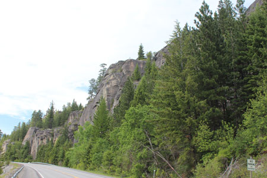
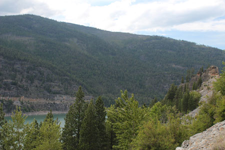
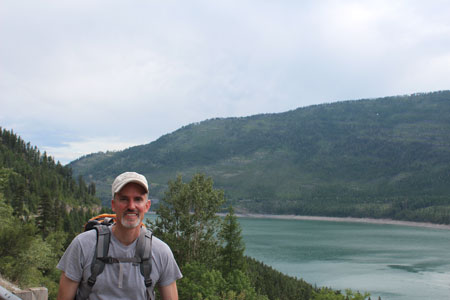
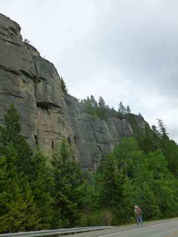
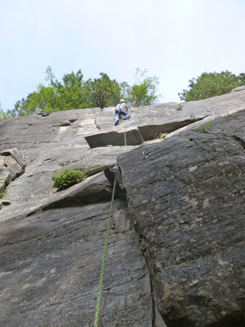
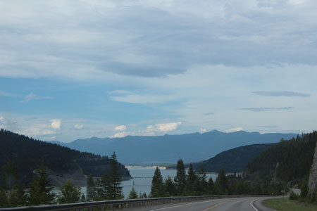
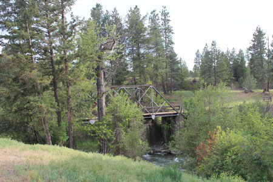
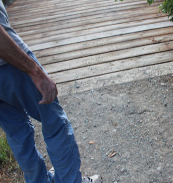
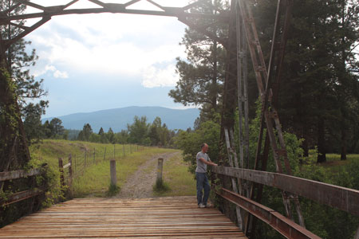
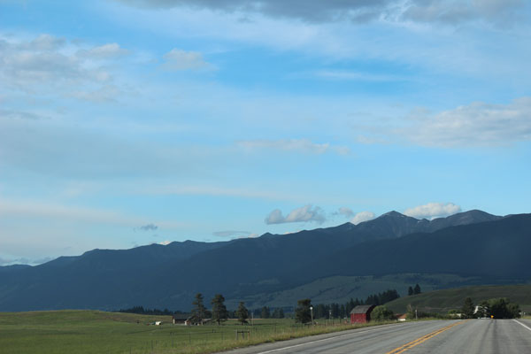

May 31, 2015
| After a week of driving and getting settled, we
needed a break. I decided to belay for Eric so that he could do some
climbing at Stone Hill. I enjoyed the scenery (and the company, of
course!) It was a lovely day. |
|
 |
 |
| A view of some of the many bluffs | The formation at the far right has a climb called, "Room With a
View". You should ask Eric about that climb sometime! |
 Eric and Lake Koocanusa. He's ready to climb! |
|
| Me, carrying the rope bag | |
 |
 |
| Eric choosing his spot | Don't tell him I took this - I was belaying at the time! |
 |
 |
| A view of the lake as we were leaving that night | We decided to stop at Pigeon Bridge to see where Dan & Rose are building a cabin - beautiful! |
 |
 |
| We saw this tiny snake - quite a bit smaller than the huge rattlesnake we saw on our last hike in the Wichita Mountains, OK. |
Eric having deep thoughts - just before we disturbed some wasps |
 |
|
| Heading back into Eureka - lovely evening | |